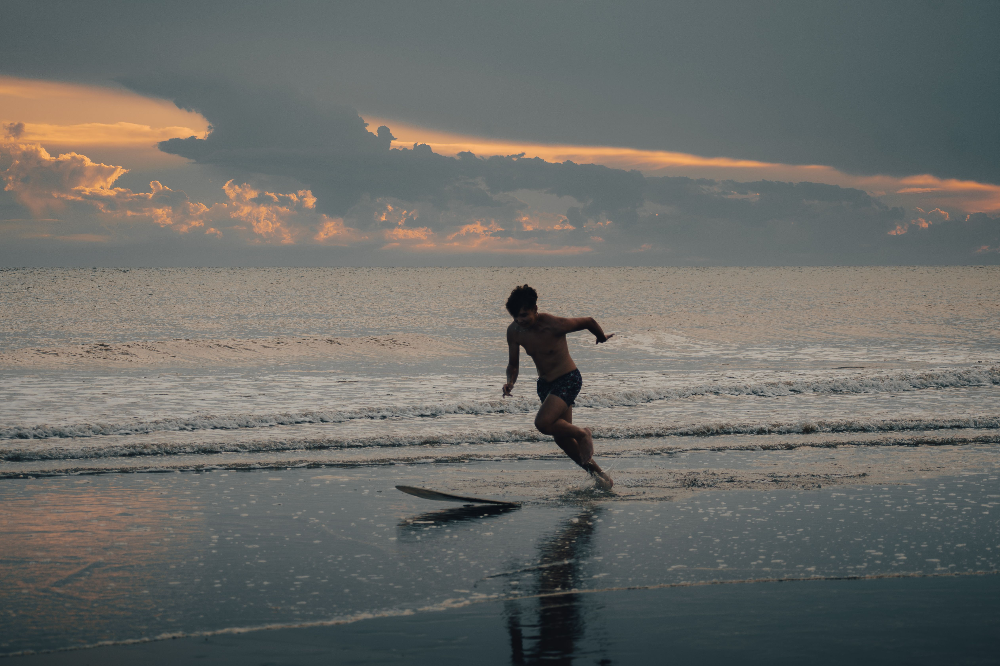

Spots de skimboard
Les États-Unis
Des plages mythiques pour les passionnés de glisse.
Guide local
Skimboarder aux États-Unis
La Californie et les côtes du Pacifique proposent de nombreuses plages pour pratiquer. Informe-toi sur les courants, la réglementation et les zones réservées aux baigneurs.
Spots à découvrir
Laguna Beach, San Diego et les plages de Californie.
Meilleur choix : un spot surveillé avec une zone de sable dégagée.
Carte interactive
Spots de skimboard aux États-Unis
La carte Mapbox sera centrée sur la côte californienne.
Carte Mapbox